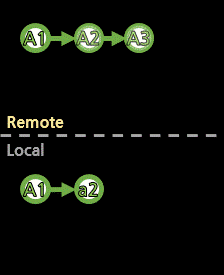
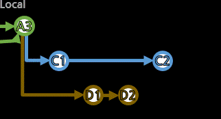

[fetch 및 pull(fetch+merge)]

리모트의 최신 상태를 로컬로 가져오거나(fetch),
가져와서 로컬의 상태에 적용까지 시킨다(pull=fetch+merge).
> git fetch
> git fetch
(최신 상황과 일치하면 응답은 없음)
사실, git fetch는 얼마든지 자주 사용해도 된다.
fetch는 정보만 받아올 뿐, 직접 파일에 반영시키는 것은 아니기 때문.
> git push
! [rejected] a01 -> a01 (fetch first)
error: failed to push some refs to 'https://github.com/BlackdeerY/example.git'
push 전에 fetch를 먼저 하라고 거부될 때가 있다.
> git fetch
remote: Enumerating objects: 4, done.
remote: Counting objects: 100% (4/4), done.
remote: Compressing objects: 100% (2/2), done.
remote: Total 3 (delta 0), reused 3 (delta 0), pack-reused 0
Unpacking objects: 100% (3/3), done.
From https://github.com/BlackdeerY/example
831de53..aa4b9a1 a01 -> origin/a01<---- 변동 정보가 있는 리모트브랜치
git fetch로 최신 정보를 받아온다.
push가 거부되었던 경우에는, fetch 후에 git checkout을 해보면
최신(up to date)이 아니라 좀 다른 상태로 얘기해준다.
> git checkout
Your branch and 'origin/a01' have diverged,
and have 1 and 1 different commits each, respectively.
(use "git pull" to merge the remote branch into yours)
다른 누군가가 해당 브랜치에 커밋을 진행시켜서,
브랜치가 다른 쪽의 경로와 내 경로가 여러 길로 생겨버린
분기가 발생(diverged)한 경우도 있고,
> git checkout
Your branch is behind 'origin/a01' by 1 commits, and can be fast-forwarded.
(use "git pull" to update your local branch)

그냥 리모트보다 뒤쳐진 상태라(로컬만의 커밋이 없어서)
빨리감기(fast-forward)로 HEAD만 옮기는 것으로 해결되는 경우도 있다.
> git branch -vv
* a01 4633d22 [origin/a01: behind 1] commit comment<---- 리모트보다 1 뒤쳐짐 (pull 해야함)
c01 ea2e881 [origin/c01: ahead 1] commit comment<---- 리모트보다 1 앞섬 (push 해야함)
main 7dd19e8 [origin/main] commit comment<---- 리모트와 동일함
test1 b1bcce7 [origin/test1: ahead 2, behind 1] commit comment<---- 리모트보다 1 뒤쳐진 곳에서 분기하여 2만큼 커밋 존재 (병합필요)
test2 b1bcce7 commit comment<---- 아직 리모트와 연동되지 않은 오직 로컬 상태
git branch -vv로 전체 브랜치의 리모트 상황을 비교할 수 있다.
이제 fetch로 받아온 정보를 로컬의 상태에 적용시키면서, 리모트와 달라져버린 상태를 해결해보자.
git merge로 해결할 수 있다. merge는 커밋끼리(같은 브랜치든 다른 브랜치든) 병합시킨 커밋을 생성하는 명령어이다.
git pull은 fetch+merge하는 동작이라, fetch를 했으니 merge만으로도 되지만, pull로 처리해도 상관없다.
(이 작업에서의 의미적으론 pull이 더 맞다. 위의 checkout 응답에서도 계속해서 git pull로 얘기하고 있다.)
어떤 상황이든 git merge만으로 자동 병합을 시도하고, 자동으로 처리가 가능하면 수월하게 완료된다.
> git merge
Updating 7ccd23b..0bdcb3c
Fast-forward<---- fast-forward로 처리됨
004.txt | 1 +
1 file changed, 1 insertion(+)
fast-forward는 간단하게 merge되었다.
내가 올려버릴 나만의 로컬 커밋이 아예 없었으니, 이대로 해결이 끝났다.
git checkout을 해봐도 최신(up to date)으로 말끔하게 상황 종료.
fast-forward 경우는 병합할 것 없이, 그냥 리모트의 최신 상태를 가져와서 깔끔하게 적용된 것.
그러면 분기가 발생된(diverged) 상황을 보자.
> git merge
Merge made by the 'recursive' strategy.
004.txt | 0
1 file changed, 0 insertions(+), 0 deletions(-)
create mode 100644 004.txt
갈려나온 분기들을 병합(merge)하는 커밋을 생성하는데,
이 커밋들을 합쳤을 때, 딱히 같은 곳을 건드리지 않는다면 별 문제 없이 자동으로 병합된다.
(분기된 경로에서 같은 파일을 건드리지 않는다면 손쉽게 합쳐진다.)
병합된 커밋만을 생성한 것이므로, 이 커밋은 로컬에만 존재한다. 필요하면 push한다.
> git push
Enumerating objects: 9, done.
Counting objects: 100% (8/8), done.
Delta compression using up to 8 threads
Compressing objects: 100% (4/4), done.
Writing objects: 100% (5/5), 602 bytes | 602.00 KiB/s, done.
Total 5 (delta 0), reused 0 (delta 0)
To https://github.com/BlackdeerY/example.git
aa4b9a1..7651d26 a01 -> a01
> git log
commit 7651d26b91fac3fa0a13cbaca5fd2d249585f91a (HEAD -> a01, origin/a01)
Merge: 54cd13d aa4b9a1<---- 54cd13d 커밋에서(주체) aa4b9a1 커밋을(대상) 병합함
Author: USER <email@address.com>
Date: EEE MMM dd HH:mm:ss yyyy +0900
Merge remote-tracking branch 'refs/remotes/origin/a01' into a01<---- 병합하면서 자동으로 생성된 코멘트
...
충돌(conflict)이 존재하여 자동으로 병합되지 않는 경우도 보자.
> git merge
Auto-merging 001.txt
CONFLICT (content): Merge conflict in 001.txt<---- 충돌(conflict)이 존재
Automatic merge failed; fix conflicts and then commit the result.
충돌(conflict)이 존재하여 자동 병합이 실패하여 병합 커밋 생성이 중지된 상황이다.
해당 파일들을 직접 텍스트 에디터로 열어보자.
<<<<<<< HEAD (지금_내_커밋ID)
지금_내_내용
지금_내_내용
지금_내_내용
=======
병합할_반대편_내용
병합할_반대편_내용
병합할_반대편_내용
>>>>>>> 병합할_반대편_커밋ID
로컬과 리모트의 상태가 둘 다 보여지는데,
쓸 것만 남겨둔 후 양식(<<<<<<< ..., =======, >>>>>>> ...)을 지워준다.
> git add 001.txt
해당 파일을 수정했으니, git add로 최종본을 Stage시킨다.
(자동 병합시 충돌이 없던 나머지 파일들은 이미 Stage되어있는 상태이다.)
> git merge --continue
[a01 b6aac9d] Merge remote-tracking branch 'refs/remotes/origin/a01' into a01
자동 병합에 실패하여 커밋 생성이 중지되었으니, git merge --continue로 계속 진행하도록 해준다.
(git commit으로 직접 커밋을 생성해도 상관 없다. merge를 중단하려면 git merge --abort.)
역시 병합된 커밋만을 생성한 것이므로, 이 커밋은 로컬에만 존재한다. 필요하면 push한다.
> git push
Enumerating objects: 10, done.
Counting objects: 100% (10/10), done.
Delta compression using up to 8 threads
Compressing objects: 100% (4/4), done.
Writing objects: 100% (6/6), 557 bytes | 557.00 KiB/s, done.
Total 6 (delta 0), reused 0 (delta 0)
To https://github.com/BlackdeerY/example.git
a056bf5..b6aac9d a01 -> a01
> git log
commit b6aac9d92b478edf879bd94848de6a56c07d205e (HEAD -> a01, origin/a01)
Merge: 946a0d4 a056bf5<---- 946a0d4 커밋에서(주체) a056bf5 커밋을(대상) 병합함
Author: USER <email@address.com>
Date: EEE MMM dd HH:mm:ss yyyy +0900
Merge remote-tracking branch 'refs/remotes/origin/a01' into a01
...
1. fast-forward로 가능한 경우(로컬 커밋이 없고, 그냥 리모트 상태를 받아와서 적용만 하면 되는 경우)
: 그냥 git merge(git pull)만으로 해결된다.
2. 다른 누군가 리모트에 진행을 시켜서, 로컬의 진행 경로와 다르게 분기가 발생(diverged)된 경우
2-1. 충돌(conflict) 없음: git merge(git pull)로 자동 병합되고, 필요하면 git push.
2-1. 충돌(conflict) 있음: git merge(git pull) 후, 일부 조율. git add 후 git merge --continue로 병합 커밋 완결. 필요하면 git push.
ㆍfetch: 최신 정보를 받아오기만 함
ㆍmerge: 병합 커밋을 생성
ㆍpull: fetch+merge
fetch는 정보만을 갱신하고, pull은 직접적으로 처리를 시도한다.
git merge는 충돌(conflict) 상황 뿐만 아니라, 다른 브랜치를 합칠 때에도 사용한다.
(이 명령어는 "병합된 커밋을 생성"하는 것이니)

이제는 다른 브랜치의 병합 쪽을 보자. [merge 더 알아보기]